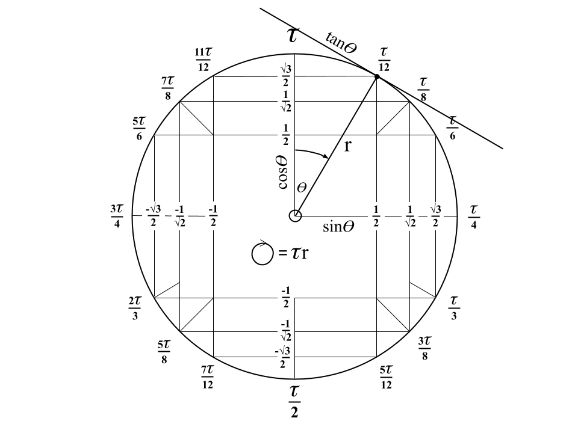

Trig Done Right
(it might be wrong)
by Jay Bostock
20240517
Introduction
A couple of weeks ago I stumbled across the notion that is the wrong circle constant. This immediately piqued my interest, what did this mean? I learned that is was Bob Palais that wrote " Is Wrong!" back in 2001 and Michael Hartl picked up the mantle with his cute book entitled "THE au MANIFESTO", first published on "Tau Day", 2010. I simply fell in love with this new circle constant and the beautiful way it dovetails into the language of mathematics when you start using it.
This document is one example of the turbo boost our mathematics and understanding will receive once we put it in the hands of the next generation of mathematicians and physicists.
Supposition
Proof
In order to prove the supposition above I will be using "clean thinking", whereby I choose or design the mathematical methods and tools that most naturally describe (or model) the problem I am considering.
Circle Constant
Throughout this document I will be using Tau as the universal circle constant:
Tau is the number of radians in a complete turn.
(A radian is equivalent to the angle subtended at the centre of a circle by an arc equal in length to the radius.)
Radial Coordinates
None of the existing coordinate systems were suitable for my needs, so I designed the "Radial Coordinate System"
Radial coordinates are similar to polar coordinates in that they use angle and distance from the origin (the radius).
The angle comes first (or first and second in the case of 3 dimensions) and is expressed as a fraction of Tau radians, for example  (pronounced "Tau by two") is equivalent to 180°. Tau must always be present in the angle expression, so if the user wishes to express 1 radian it would be expressed as
(pronounced "Tau by two") is equivalent to 180°. Tau must always be present in the angle expression, so if the user wishes to express 1 radian it would be expressed as  ("one Tau by Tau"), it should be noted that this situation is very rare and most angles will naturally be expressed using Tau. The presence of Tau indicates that we are talking in terms of a fraction of a turn, or an angle. A positive angle is always measured clockwise from North.
("one Tau by Tau"), it should be noted that this situation is very rare and most angles will naturally be expressed using Tau. The presence of Tau indicates that we are talking in terms of a fraction of a turn, or an angle. A positive angle is always measured clockwise from North.

In 3 dimensional radial coordinates: angle 1 is measured at the origin, from North, clockwise around the prime meridian. The second angle is then measured from this point after performing a "Tau by four" around a line of latitude. Detailed discussion of 3D radial coordinates is beyond the scope of this document.
The length (default SI unit: metres) comes second (or third in the case of 3 dimensions). This is the radial distance from the origin in the direction set by the angle coordinate/s.
Radial coordinates can be used to specify:
- A bearing: , equivalent to due East
- A point in 2D space:
 , a point 10 from the origin at a bearing of 240°
, a point 10 from the origin at a bearing of 240° - A 3D bearing:
- A point in 3D space:
The language of Tau
It is important from the outset when using Tau that we structure the language such that there is maximum clarity conveyed between communicating individuals. To this end there exists default phraseology which should be followed, as detailed below.
Adhering to this convention will greatly improve the transition to the widespread use of Tau, not only in relation to mathematics, but also wider societal acceptance.
- A Tau - synonymous with a complete circle, revolution, 360, 1 orbit.
- "x" Tau by "y" - generally speaking we will be using fractions to describe portions of a turn, eg
 but rather than saying "three quarters Tau" we read it as "three Tau by four". This is helpful to the listener because a "Tau by four" is a right angle and will be used frequently, so a "three Tau by four" is simply three of them - 270° in old money.
but rather than saying "three quarters Tau" we read it as "three Tau by four". This is helpful to the listener because a "Tau by four" is a right angle and will be used frequently, so a "three Tau by four" is simply three of them - 270° in old money.  - "Tau by two" - half a turn, a 180, an about turn, a u-turn
- "Tau by two" - half a turn, a 180, an about turn, a u-turn - "Tau by three" - third of a turn, 120°
- "Tau by three" - third of a turn, 120° - "Tau by four" - quarter turn, 90°, right angle
- "Tau by four" - quarter turn, 90°, right angle - "Tau by six" - 60° angle
- "Tau by six" - 60° angle - "Tau by eight" - 45° angle
- "Tau by eight" - 45° angle - "Tau by twelve" - 30° angle
- "Tau by twelve" - 30° angle- - "three Tau by four" - a 270, three quarters of a circle/turn
 - "five Tau by six" - 300°
- "five Tau by six" - 300°- 2 milliTau - , "two Tau by a thousand" or one 500th of a turn
- etc
The Tau Dial

When we lay the Radial Coordinate system over the Cartesian (x, y) coordinate system, with coincident origins and y-axis parallel to the North axis, serendipities begin to blossom on the page.
Consider the unit circle laid over our coincident coordinate systems (radial and cartesian), as in the diagram above, the Tau Dial.
The point plotted is at an angle of 30°, or Tau by twelve (radians - the radial unit is implicit when we use Tau, we can be explicit to cement understanding, but it is not necessary). The point in the 2D plane is:
Radial coordinates: 
Cartesian coordinates:
We soon realise that we can read all of the "exact values" and their respective signs (no more "All, sin, tan, cos") straight off the Tau Dial. It's natural and beautiful and a pedagogical wonder. Some examples:


Tangent


Notes
I have found it difficult to find a definitive definition (is that an intensificatory reduplication?) of "tangent", so I'm going with: I instinctively know that my interpretation (as detailed in the above example) is correct, and I therefore tentatively suggest that certain aspects of trigonometry are wrong and need checking. For example: Maybe Roger Cotes was right all along?
Conclusion
It's Tau Time: time to start using Tau.
Regardless of the supposition in this document, it's clear that the correct circle constant to use going forward is Tau - just try drawing a beautiful circle with only the circumference as your dimension.
Why have we not corrected this mistake before now?
There is no blame to be apportioned (save perhaps the collective intellectual community for effectively ignoring Bob Palais' red flag for the better part of a quarter of a century). It's quite clear that a factor of 2 is one level of complexity too much for the human brain to cope with, without making a mistake (again - assuming my supposition holds water).
This presents itself as a wondrous learning point: Question everything
We build intellectual ivory towers of knowledge and accept their truths unquestionably, but maybe these too should be subjected to the rigours of a process of continual improvement. Perhaps our education system should be less rigid, more agile and adaptive, our teaching less rote, more cognitive and exploratory.
Postscript
The real conundrum to decode here is why this proof differs from the current status quo, all the clues are contained in this document.
The first person to clearly explain the reasoning, such that it can be understood by an average 16 year old, will be the proud owner of an early edition, hand drawn Tau Dial that features in the Youtube video published on the same date as this document was submitted for peer review.
"Real knowledge is to know the extent of one's ignorance", Confucius